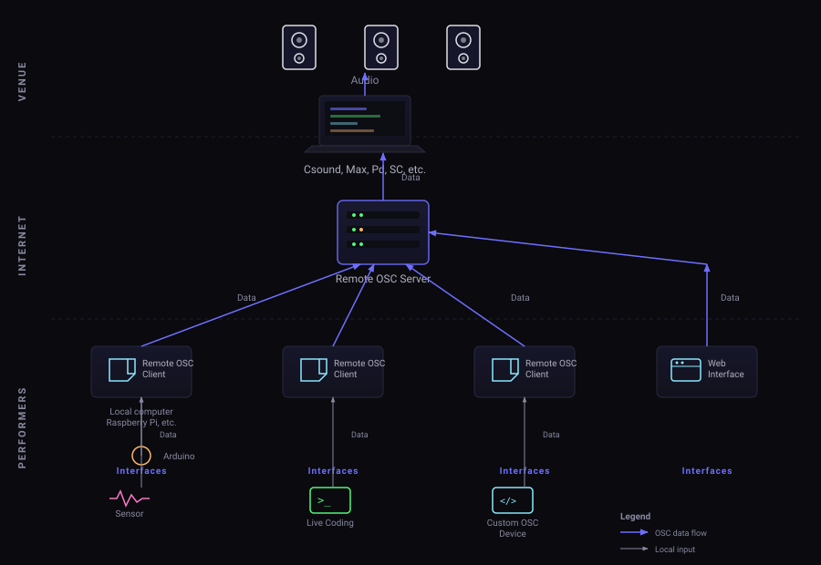

Serkan Sevilgen
A hands-on introduction to networked music performance using Remote OSC to connect local audio tools through shared control-data networks.
Networked Music Performance, or NMP, is the practice of real-time musical interaction through a computer network.
A networked music performance occurs when musicians in different physical locations interact over a network as part of one performance situation.
The instruments may be computer-only systems, human performers with acoustic instruments, or mixed setups combining performers, sensors, software, and synthesis engines.
The network may carry audio, control data, score events, code, video, chat, sensor data, or a combination of these.
Remote OSC focuses on control data and code. Audio is generated locally by tools such as Csound, SuperCollider, Pure Data, or Max/MSP.
NMP can happen indoors over a local network, outdoors over temporary wireless networks, or remotely over the wider Internet.
Local area networking can support tighter timing. Wide area networking introduces more delay, jitter, and routing uncertainty.
Some performances need tight synchronization, similar to musicians improvising in the same room. Others are loosely synchronized, where performers are aware of each other but the delay becomes part of the musical form.
If performers cannot hear or see each other, a click track, score clock, conductor signal, or shared event timeline may be needed.
Thaddeus Cahill's electrical music distribution system used telephone infrastructure to transmit generated music to many receivers.
Lee de Forest's company broadcast opera excerpts from New York, showing early public music transmission by radio.
John Cage's piece for twelve radios explored musical interaction through distributed broadcast sources, before computer networking entered the field.
Public Supply I and later Radio Net used telephone and radio systems to create public, distributed sound spaces.
Early microcomputers exchanged musical representation data through direct connections, creating one of the foundations of network computer music.
A shared-memory and later MIDI/network ensemble practice extended local laptop-style networking toward remote Internet performances.
Jean-Claude Risset, Terry Riley, David Rosenboom, and Morton Subotnick connected augmented pianos across Nice and Los Angeles using satellite links.
Research groups investigated low-latency, bidirectional audio/video links, often using dedicated high-bandwidth academic networks.
A SuperCollider Quark used by PowerBooks_UnPlugged for networked laptop performance, sharing code, chat, and control data between performers.
A SuperCollider library by Scott Wilson, Julian Rohrhuber, and Alberto de Campo for networked music applications, building on Republic and adding modular tools for synchronization, communication, code sharing, and data sharing.
Groups such as PowerBooks_UnPlugged, PLOrk, SLOrk, MIAM Gendy Ensemble, and others normalized networked laptops as performance instruments.
Recent work treats NMP as both an engineering problem and a compositional opportunity: latency, packet loss, jitter, clock drift, spatial audio, XR, and musical interaction design are all active topics.
JackTrip and SonoBus are common choices when the network carries audio between performers.
Remote OSC is different: it sends control data, text, and code over WebSockets, while each participant's local machine generates sound.
The IEEE International Symposium on the Internet of Sounds is a current venue for work on NMP, networked immersive audio, Web Audio, smart instruments, and related systems.
Every NMP setup must decide which timing problems it can reduce, which ones it can tolerate, and which ones can become part of the music.
Latency is the time between an action and its remote result. Round Trip Time, or RTT, measures the time for audio or data to go to the remote end and return. For tightly synchronized ensemble playing, the often-cited Ensemble Performance Threshold is around 25 ms.
Audio dropouts happen when packets arrive too late or never arrive. Control-data systems are less bandwidth-heavy, but still need meaningful behavior when messages are delayed, dropped, or arrive out of order.
Digital audio is processed in buffers. Larger buffers make systems more stable, but each buffer adds delay before transmission, processing, or playback can happen.
Compression can reduce bandwidth, but codecs introduce processing delay. This matters most when the network carries audio rather than only control data.
Network delay includes physical propagation and packet switching. Even though signal propagation is fast, Internet routing and traffic variation can add tens of milliseconds and unpredictable packet delay variation.
Different audio devices have different clocks. Over time, A/D and D/A clock differences can cause drift, requiring resampling, synchronization, or musical designs that do not depend on sample-accurate alignment.
Remote OSC is designed for networked performance over wide area networks where sending musical control data is more practical than streaming audio.
Instead of transmitting sound, Remote OSC transmits the values, events, code, and text that can produce or shape sound on each participant's own computer. This avoids many audio-streaming problems such as audio compression artifacts, audio dropouts, A/D and D/A conversion latency, and packet-loss handling for continuous audio.
The ecosystem is split into focused repositories. Each component can be used independently, but they are designed to work together.
WebSocket relay server with network-based routing and SQLite-backed registration. Performers connect to named networks; messages are relayed only within that network. Supports password-protected network creation and performer IDs from 0 to 99.
Bidirectional WebSocket-to-UDP bridge. Connects local audio applications to the server for collaborative performance. Guided CLI setup with saved profiles in ~/.remote_osc/, cross-platform binaries (macOS, Linux, Windows, Raspberry Pi), and automatic reconnection with exponential backoff.
Static browser performance interface and monitoring tool. Join networks, send control data, exchange chat and code snippets, monitor traffic, and generate config files for the Remote OSC Client. Uses native WebSockets so binary OSC and JSON text frames coexist.

Remote OSC has been used in telematic ensemble performances and interactive installations.
A networked, multichannel work where performers remotely control Gendyn-based Csound instruments with OSC parameters. Remote OSC carries the data traffic between performers and host computer.
By Serkan Sevilgen
gendycloud.serkansevilgen.comA real-time biodata sonification artwork. GSR sensor data travels through Remote OSC to a web-based Csound engine for live sonification.
By Ipek Oskay and Serkan Sevilgen
serkansevilgen.com/sounding-microcosmosThis part installs and configures the Remote OSC Client. Use the Python example first because it confirms the network path without requiring an audio environment. Then move to Pure Data, Max/MSP, Csound, or SuperCollider.
Choose the binary that matches your operating system and processor. The workshop package includes the binaries in bin/ and the audio application examples in docs/examples.zip.
| System | Binary |
|---|---|
| macOS Apple Silicon | remote-osc-client-darwin-arm64 |
| macOS Intel | remote-osc-client-darwin-amd64 |
| Linux amd64 | remote-osc-client-linux-amd64 |
| Linux arm64 | remote-osc-client-linux-arm64 |
| Raspberry Pi 3/4 | remote-osc-client-linux-armv7 |
| Raspberry Pi 1/2/Zero | remote-osc-client-linux-armv6 |
| Windows amd64 | remote-osc-client-windows-amd64.exe |
| Examples | docs/examples.zip |
Put the client somewhere stable and run it from a terminal. On macOS and Linux, rename the downloaded binary to remote-osc-client and make it executable.
mkdir -p ~/bin mv ~/Downloads/remote-osc-client-* ~/bin/remote-osc-client chmod +x ~/bin/remote-osc-client ~/bin/remote-osc-client
Optional: add ~/bin to your shell path so you can run remote-osc-client from any folder.
cd $HOME\Downloads mkdir $HOME\remote-osc-client move .\remote-osc-client-windows-amd64.exe $HOME\remote-osc-client\ cd $HOME\remote-osc-client .\remote-osc-client-windows-amd64.exe
Optional: rename the file to remote-osc-client.exe and add the folder to your Windows Path.
Start the client without a config path to open the guided CLI flow. It can connect using a saved profile, create a new profile, edit a saved profile, or load a config file manually.
remote-osc-client
For the workshop, you can also download the prepared config file: docs/miam-Serkan.json.
remote-osc-client ~/Downloads/miam-Serkan.json
Profiles are stored in your home directory under ~/.remote_osc/. On Windows this resolves under your user home directory, for example C:\Users\you\.remote_osc\.
| Prompt | Default | Meaning |
|---|---|---|
Server address |
ws://127.0.0.1 |
Local server while developing. Use the workshop server address for this session. |
Server port |
8081 |
Local server port. Cloud servers commonly use 443. |
Network name |
workshop network | The shared room or network name everyone joins. |
Network password |
provided in workshop | Password for the network, if the server requires one. |
Username |
your name | Name registered with the server. Use a unique name. |
Client listen address |
0.0.0.0 |
Address the Remote OSC Client listens on for OSC from your local app. |
Client listen port |
1337 |
Port your local app sends OSC to. |
Local app address |
127.0.0.1 |
Address of Max, Pure Data, Csound, SuperCollider, or another app on your machine. |
Local app port |
7770 |
Port your local app listens on for OSC from the network. |
Unzip docs/examples.zip. The examples use the same control vocabulary: freq and amp. Local controls do not change the synth directly; the synth changes only when messages return through the Remote OSC path.
NetAddr and OSCdef.Remote OSC Web is a browser performance interface and monitoring tool for the Remote OSC ecosystem. It lets performers join a shared OSC network from the browser, send control data, exchange chat and code snippets, monitor activity, and generate config files for the Remote OSC Client.
Remote OSC Web is not an audio engine, and it cannot send UDP OSC directly to a local audio application from the browser. Audio is generated by local tools such as Max/MSP, Pure Data, Csound, SuperCollider, or another OSC-capable app through remote-osc-client.
freq and amp.remote-osc-client.The config builder can download a JSON profile for the Remote OSC Client. Use the downloaded file with:
remote-osc-client path/to/config.json